Ubicación
Centro de MisionesRuta Nacional 12
En el corazón de la selva misionera, donde la naturaleza cobra vida en cada rincón. Cascadas, selva virgen y una biodiversidad única en el mundo te esperan.
La ciudad
Una ciudad misionera que enamora con su naturaleza y su gente.
Jardín América está ubicada en el centro geográfico de la provincia de Misiones, sobre la Ruta Nacional 12, la arteria principal que conecta Posadas con Puerto Iguazú. Su nombre lo dice todo: es un verdadero jardín en medio de América.
Rodeada de una naturaleza exuberante propia de la selva paranaense, la ciudad es el punto de partida ideal para explorar los grandes atractivos de la provincia. A unos 30 minutos de las Ruinas Jesuíticas de San Ignacio y a 2 horas y media de las Cataratas del Iguazú.
Su entorno natural es notable: una gran variedad de aves y una rica flora subtropical con orquídeas y especies nativas de la selva misionera. A escasos kilómetros se encuentra el Parque Provincial Valle del Cuñá Pirú, hogar de los principales representantes de la fauna de la selva misionera.
El clima es subtropical cálido y húmedo durante todo el año, con lluvias distribuidas en todas las estaciones que mantienen verde e inundada de vida la selva que rodea la ciudad.
Ruta Nacional 12
Ciudad en crecimiento
~1 h 15 min por Ruta 12
~2 h 30 min por Ruta 12
Cálido y húmedo
Argentina
Jardín América se encuentra sobre la Ruta Nacional 12, la principal vía de conexión entre Posadas y Puerto Iguazú. Desde Posadas: 100 km hacia el norte (~1 h 15 min). Desde Puerto Iguazú: 200 km hacia el sur (~2 h 30 min). La ruta está completamente pavimentada y en buen estado. Además, la Ruta Provincial N° 7 conecta el centro urbano con la Ruta Nacional 14 —el corredor que une Misiones con Corrientes y el resto del país por el este—, lo que convierte a Jardín América en un nodo de acceso desde ambas rutas nacionales.
Hay servicios de larga distancia que pasan por Jardín América desde Posadas, Puerto Iguazú y otras ciudades de Misiones. La terminal de ómnibus se encuentra en el centro de la ciudad, frente al Cristo de la Hermandad. Empresas como Río Uruguay y Expreso Singer operan en este corredor.
El aeropuerto más cercano es el Aeropuerto Internacional Libertador Gral. San Martín de Posadas (100 km), con vuelos diarios desde Buenos Aires. También puede usarse el Aeropuerto Internacional de Iguazú (200 km).
Mapa turístico de Jardín América — hacé clic para explorar los puntos de interés
Destino local
La selva que rodea la ciudad guarda tesoros naturales que sorprenden a cada visitante.
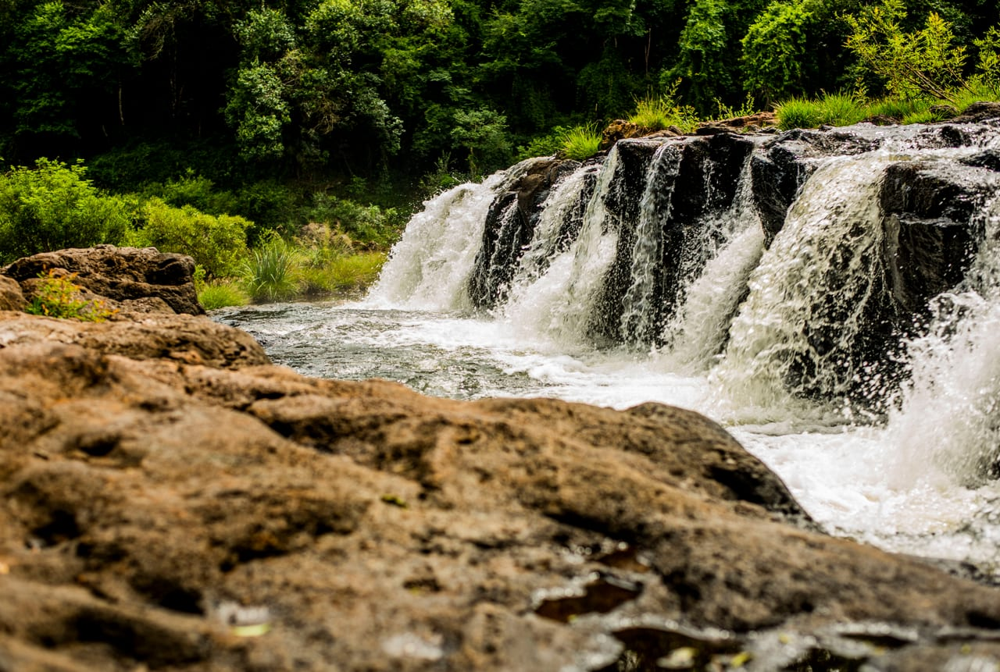
⭐ Principal atractivoEl gran tesoro natural de Jardín América. Los Saltos del Tabay son una serie de cascadas y pozones escalonados en plena selva paranaense, donde el agua cae sobre rocas basálticas cubiertas de una vegetación exuberante.
Un destino imperdible para los amantes de la naturaleza, el trekking y la fotografía. El entorno natural prácticamente intacto convierte a este lugar en una experiencia única, con sonidos de aves, el rumor del agua y el aroma de la selva húmeda.
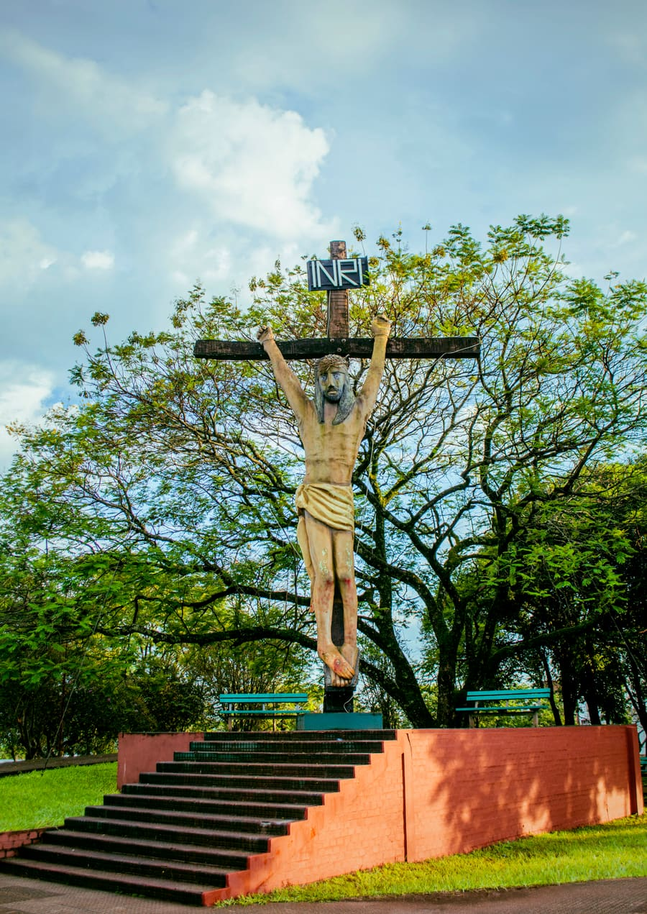
Icónico monumento ubicado frente a la terminal de ómnibus. Fue tallado originalmente en una sola pieza de madera de timbó de 8,50 m por el escultor chileno Luis Javín Sizzara, e inaugurado el 20 de diciembre de 1998. Sobre un pedestal de hormigón alcanza los 18 metros de altura total. Es el primer símbolo que recibe al visitante al ingresar a la ciudad.
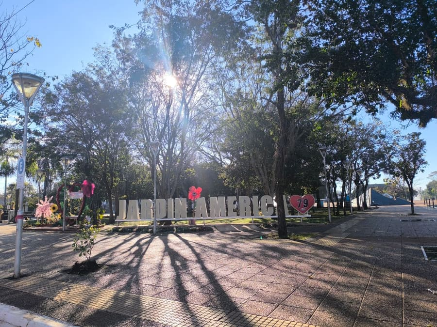
El corazón de Jardín América. Diseñada en 1967 por el arquitecto Fernando Juan Dasso, su geometría única combina cuadrados concéntricos con diagonales a 45°. Cuenta con cuatro pirámides de piedra basáltica con bajorrelieves históricos, espejo de agua y anfiteatro. Los domingos se convierte en escenario de los tradicionales Domingos Culturales con músicos, artesanos y emprendedores locales.
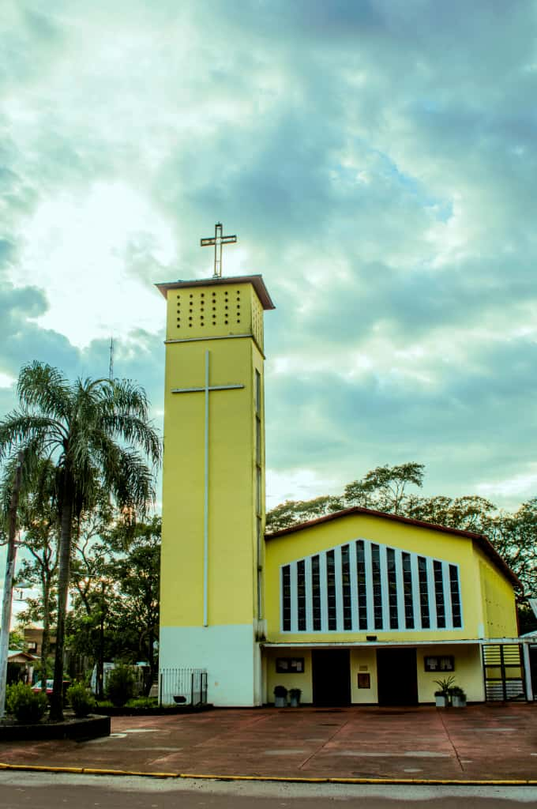
Fundada en 1952 y construida entre 1964 y 1967, es el templo más importante de la ciudad. Su rasgo más llamativo son sus 58 vitrales policromados que suman 125 m² de vidrio de color, diseñados por el arquitecto Fernando Dasso y fabricados en Porto Alegre. En su interior se venera una escultura del Cristo Redentor tallada en cedro colorado por el escultor tirolés Leo Moroder (1970), de 2,50 m y 300 kg.
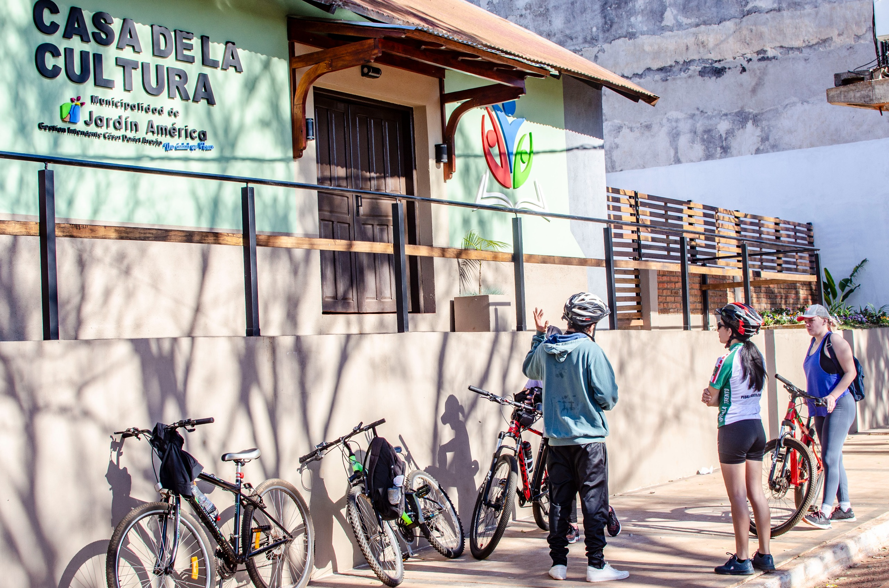
Espacio institucional donde se concentra la vida cultural y artística de Jardín América. Organiza exposiciones, talleres, espectáculos y encuentros comunitarios, en articulación con el área de Cultura y Turismo Municipal y la Secretaría de Estado de Cultura de Misiones. También sede del Centro Social y Cultural Germano Argentino, activo en la comunidad desde hace décadas.
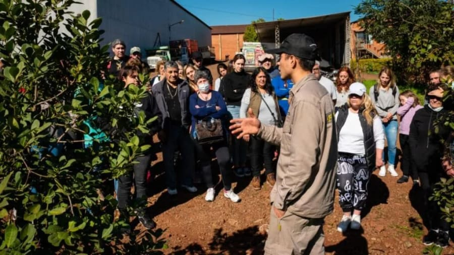
Fundada en 1973, es una de las cooperativas agroindustriales más importantes de Misiones, con más de 180 productores asociados. Ubicada sobre la Ruta 12, es parada obligada para conocer y comprar productos regionales a precio de origen: yerba mate, encurtidos (sus pepinillos son famosos en todo el país), dulces artesanales y fécula de mandioca.
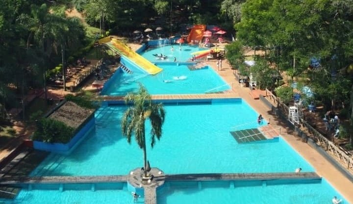
Con más de 28 años de trayectoria, es el complejo recreativo más reconocido de la zona. Sobre la Ruta 12, ofrece piscinas con guardavidas, tirolesa, trekking, mountain bike, cabalgatas, quinchos, restaurante y alojamiento en cabañas y camping. Gestionado por una familia de origen alemán con fuerte compromiso ambiental y con la selva misionera.
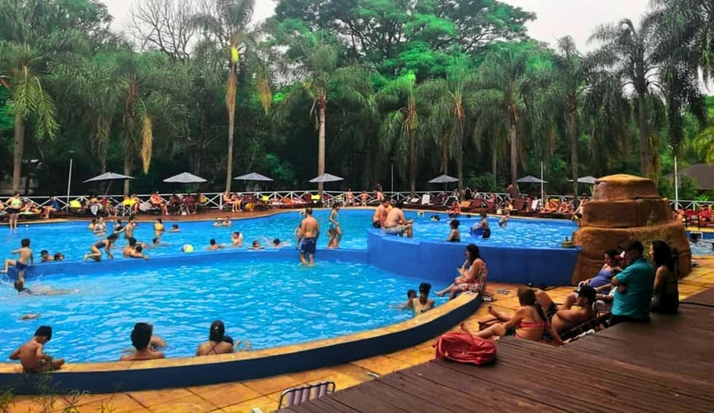
A solo 4 km del centro, sobre el km 1445 de la Ruta 12 a orillas del Arroyo Tabay. Cuenta con más de 20 cabañas con balcón y vista directa al arroyo y la cascada, piscina, restaurante y desayuno incluido. Desde el lodge se puede llegar caminando a los Saltos del Tabay en unos 25 minutos por sendero selvático.
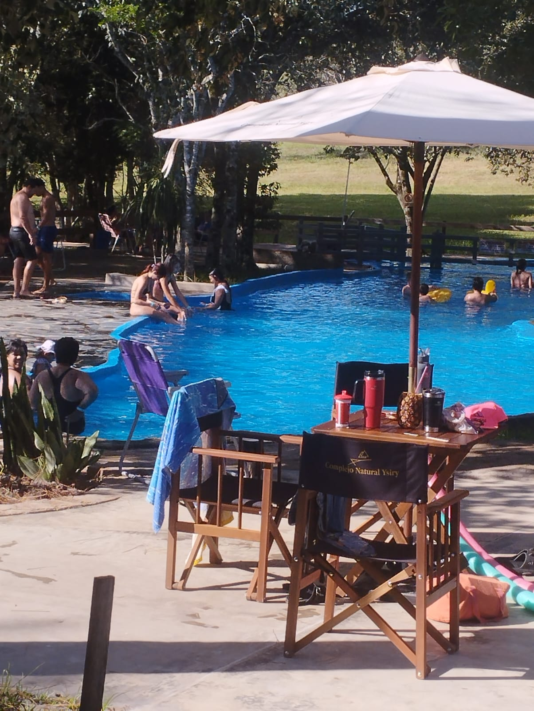
"Ysirý" significa agua que corre en guaraní. Emprendimiento familiar inaugurado en 2018 en 15 hectáreas de naturaleza misionera. Cuenta con piscinas alimentadas por manantiales naturales, camping, cantina, animales en semilibertad y un salón de eventos climatizado para 220 personas. Abierto todos los días desde las 8 hs.
Excursiones desde aquí
La Ruta 12 es tu autopista hacia las maravillas naturales e históricas de Misiones. Todos los grandes atractivos de la provincia están a poca distancia.
Puerto Iguazú, Misiones
Una de las Siete Maravillas Naturales del Mundo y Patrimonio de la Humanidad (UNESCO). Más de 275 saltos de agua de hasta 80 metros de altura en plena selva subtropical. La Garganta del Diablo y los circuitos superior e inferior son experiencias imborrables.
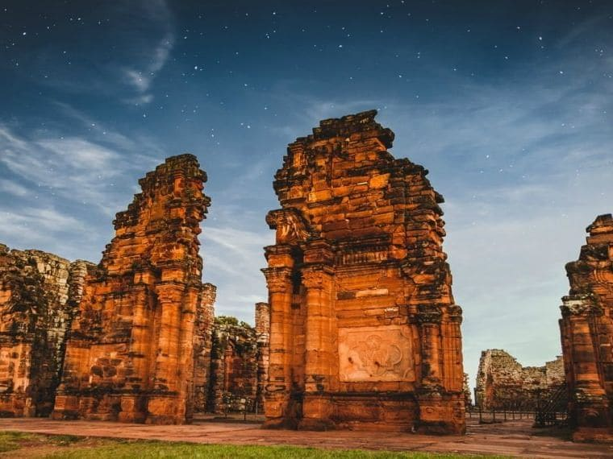
San Ignacio, Misiones
El sitio arqueológico más importante de Argentina y Patrimonio de la Humanidad (UNESCO). Las ruinas de esta misión jesuítica-guaraní del siglo XVII cuentan una historia fascinante. De noche, el espectáculo de luz y sonido es absolutamente imperdible.

El Soberbio, Misiones
Un fenómeno natural único en el mundo: cascatas longitudinales de hasta 3 km de largo sobre el río Uruguay. Ubicados en el Parque Provincial Moconá, en plena selva virgen. La mejor época para visitarlos es cuando el río baja su caudal.

Wanda, Misiones
Las únicas minas de piedras semipreciosas abiertas al turismo en Argentina. Amatistas, cuarzos, ágatas y otras gemas de extraordinaria belleza se extraen del subsuelo misionero. Un paseo geológico fascinante para toda la familia.
Aristóbulo del Valle, Misiones
Una de las cascadas más impresionantes de Misiones, con una caída de 64 metros en el corazón del Parque Provincial Valle del Cuñá Pirú. Rodeada de selva nativa, es ideal para el trekking y la contemplación de la naturaleza en estado puro.
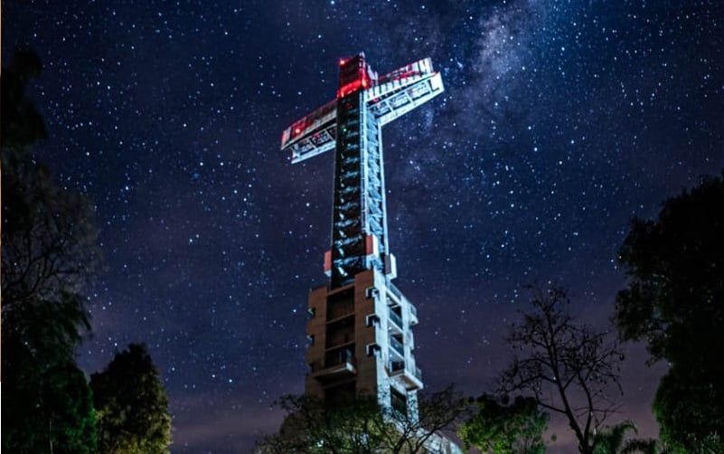
Santa Ana, Misiones
Un parque temático y espiritual ubicado en Santa Ana, con una imponente cruz que domina el paisaje misionero. Ofrece recorridos al aire libre, miradores con vistas a la selva y al río Paraná, y un entorno de paz ideal para visitas en familia o en grupo.

Posadas, Misiones
La capital provincial sobre el río Paraná, conocida por su vibrante costanera, la Bajada Vieja y la Pasarela Internacional que la une con Encarnación, Paraguay. Ciudad universitaria, cultural y gastronómica con amplia infraestructura turística.
Horarios de colectivos, alojamientos y opciones gastronómicas en la ciudad.
| Empresa | Horario | Notas |
|---|---|---|
| Kruse | 5:30 hs | — |
| Horianski | 6:40 hs | — |
| El Cometa | 7:30 hs | — |
| Horianski | 7:45 hs | — |
| Crucero del Norte | 8:15 hs | — |
| Oro Verde | 9:20 hs | — |
| Horianski | 9:50 hs | — |
| Crucero del Norte | 10:45 hs | — |
| Horianski | 10:45 hs | — |
| Crucero del Norte | 11:00 hs | — |
| Río Uruguay | 11:35 hs | — |
| Horianski | 12:00 hs | — |
| Argentinita | 12:30 hs | — |
| Oro Verde | 12:50 hs | — |
| Horianski | 13:15 hs | — |
| Crucero del Norte | 13:40 hs | — |
| Horianski | 14:30 hs | — |
| Horianski | 15:00 hs | — |
| Río Uruguay | 15:50 hs | — |
| Argentinita | 16:45 hs | — |
| Crucero del Norte | 16:50 hs | — |
| Río Uruguay | 17:15 hs | — |
| El Cometa | 17:30 hs | — |
| Águila Dorada | 17:40 hs | — |
| Argentinita | 18:00 hs | — |
| Kruse | 18:20 hs | — |
| Empresa | Horario | Notas |
|---|---|---|
| Argentinita | 5:00 hs | — |
| Argentinita | 6:00 hs | — |
| Horianski | 7:00 hs | — |
| Río Uruguay | 7:15 hs | — |
| Crucero del Norte | 8:15 hs | — |
| Río Uruguay | 9:15 hs | — |
| Crucero del Norte | 9:40 hs | Hasta Eldorado; por Ruta 17 llega a Bernardo de Irigoyen |
| Argentinita | 10:00 hs | — |
| Horianski | 10:00 hs | — |
| Río Uruguay | 11:00 hs | — |
| Crucero del Norte | 11:20 hs | — |
| Argentinita | 11:30 hs | — |
| Crucero del Norte | 11:50 hs | — |
| Río Uruguay | 12:40 hs | — |
| Crucero del Norte | 13:15 hs | — |
| Horianski | 13:20 hs | — |
| Horianski | 15:00 hs | — |
| Kruse | 15:00 hs | Andresito directo |
| El Cometa | 16:00 hs | — |
| Horianski | 16:30 hs | — |
| Argentinita | 17:00 hs | — |
| Crucero del Norte | 17:20 hs | San Antonio directo |
| Destino | Empresa | Horario |
|---|---|---|
| San Vicente | Horianski | 8:00 hs |
| A. del Valle | El Misionero | 9:30 hs |
| 25 de Mayo | Horianski | 10:30 hs |
| San Vicente | Horianski | 11:15 hs |
| A. del Valle | El Cometa | 12:30 hs |
| 25 de Mayo | Horianski | 13:15 hs |
| El Soberbio | El Cometa | 16:15 hs |
| A. del Valle | Horianski | 17:00 hs |
| San Vicente | Horianski | 19:15 hs |
⚠️ Los horarios son orientativos y pueden variar. Consultá en la terminal o con cada empresa antes de viajar. Fuente: Municipalidad de Jardín América.
Saltos del Tabay
Cabañas · DormisSaltos del Tabay, Jardín América
(3743) 400-421
Alojamiento en el predio de los Saltos del Tabay, en pleno contacto con la naturaleza.
Hotel y Cabañas Las Azaleas
Hotel · CabañasRuta Nacional 12, Km 1443 (acceso Saltos del Tabay)
+54 3743 444-378
lasazaleastabay@gmail.com
6 habitaciones y 4 cabañas (hasta 42 personas). Piscina, parque arbolado, parrillas. A 1,5 km de la cascada.
Baden Baden Cabañas y Camping
Cabañas · CampingRuta Nacional 12, Km 1435, Jardín América
(03743) 482-081 / 482-083 / 460-923
hola@complejobadenbaden.com.ar
Cabañas, departamentos, albergue y camping. Piscinas con toboganes, guardavidas, restaurante y quinchos.
Complejo América
Hotel · Apart · CabañasAv. Aconcagua 638/652, Jardín América
(03743) 460-521 / 469-960
WhatsApp: +54 9 3743 411-441
Hotel, apartamentos y cabañas (hasta 6 personas). Piscina, jacuzzi, canchas deportivas, juegos infantiles y estacionamiento.
Paraíso Lodge
Cabañas · LodgeRuta Nacional 12, Km 1445 (Arroyo Tabay)
(03743) 460-517 / 467-227
WhatsApp: +54 9 3764 307-029
Más de 20 cabañas (hasta 8 personas) con balcones sobre el Arroyo Tabay. Piscina, jacuzzis, bar, restaurante y camping.
Cabañas El Ciprés
CabañasErnesto Sábato 430, Jardín América
+54 374 344-0582
duplexelcipres25@gmail.com
Cabañas tipo dúplex en zona urbana, capacidad para 6 a 20 personas.
⚠️ Confirmá disponibilidad y precios directamente con cada establecimiento antes de reservar.
Parrilla Don Amado
ParrillaAv. San Martín 450, Jardín América
(03743) 15-000010
Mar a Dom · 12:00 – 15:00 · 20:00 – 24:00
Pizzería El Hornero
PizzeríaCalle Corrientes 120, Jardín América
(03743) 15-000011
Lun a Dom · 19:00 – 24:00
Café Central
CafeteríaPlaza Colón s/n, Jardín América
(03743) 15-000012
Todos los días · 07:00 – 22:00
Rancho Misionero
RestauranteRuta 12 km 1104, Jardín América
(03743) 15-000013
Mar a Dom · 12:00 – 15:00 · 19:00 – 23:00
Burger Selva
HamburguesasAv. Libertad 300, Jardín América
(03743) 15-000014
Lun a Dom · 18:00 – 01:00
⚠️ Información orientativa. Consultá horarios actualizados antes de visitar.